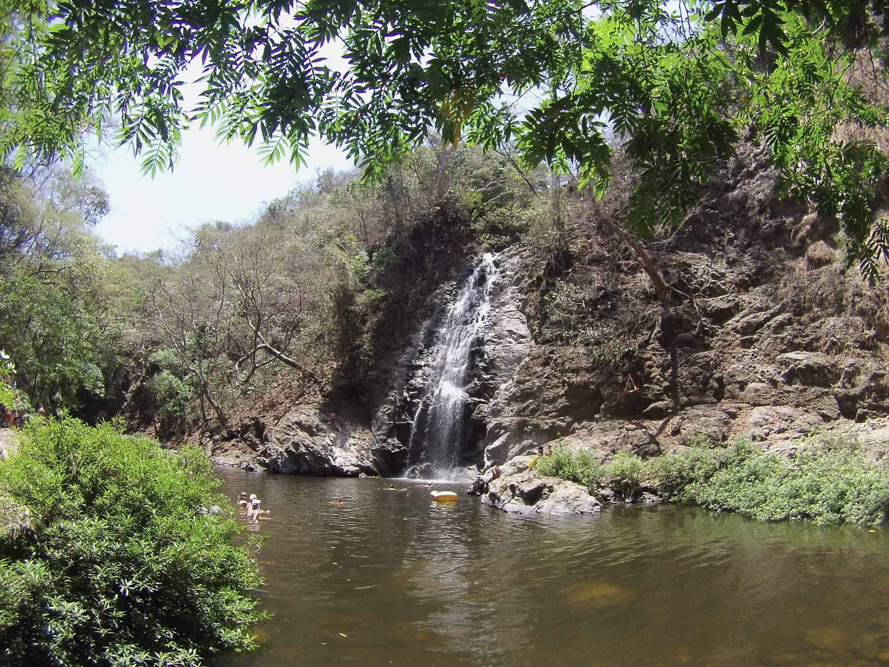
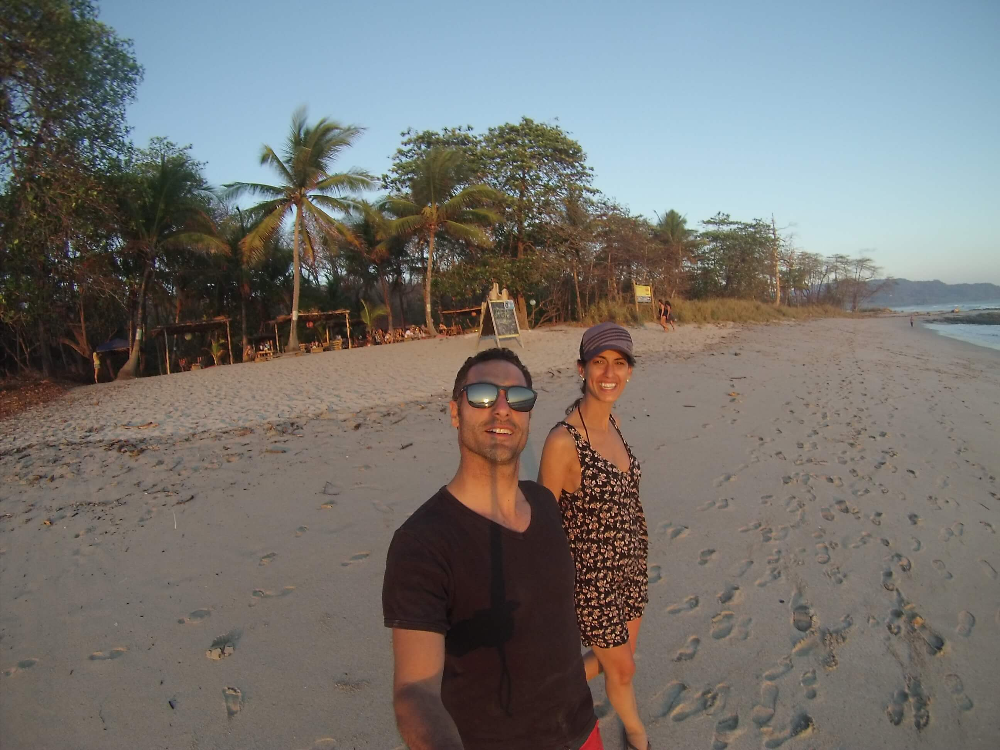
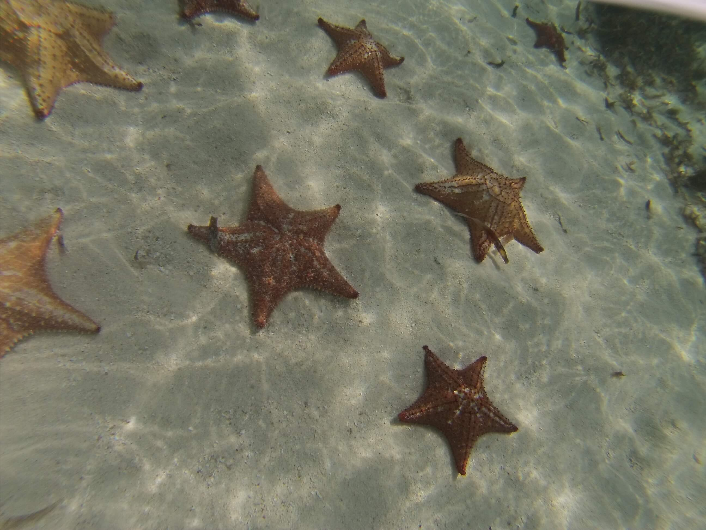
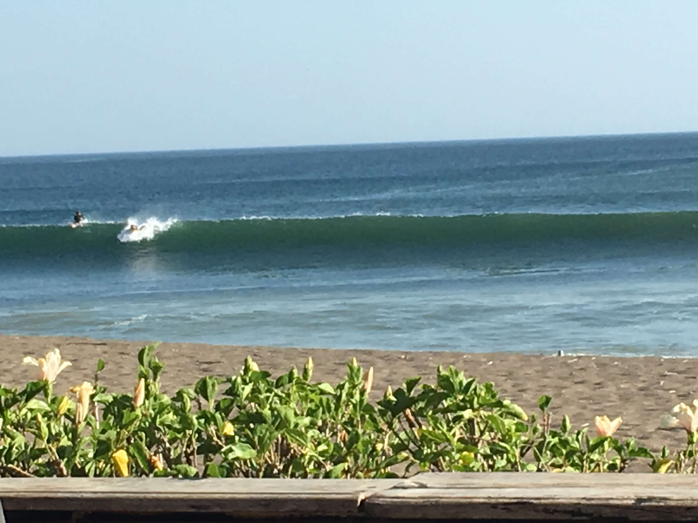

We got married in Feb' 2017, after a year of friendship. Even before we knew when we'll get married, we knew that our honeymoon will be to places with waves, the hobby of our both is surfing. Our honeymoon was for 30 days in March-April 2017, to Panama and Costa rica, both places have a perfect waves. Let me take you to our journey in the following down.
My Honeymoon: Panama - Costa Rica
#1 Location - Bocas del Toro, Panama
Our trip was started at Panama, in island called Bocas del Toro. Bocas del Toro is a province of Panama comprising an island chain off the Caribbean coast, plus a section of nearby mainland with biodiverse rainforest. Isla Colón, the main island, is home to the capital, Bocas Town, a central hub with restaurants, shops and nightlife. Popular beaches include Boca del Drago. Also on Isla Colón is Starfish Beach, named for the numerous sea stars on its ocean floor. We stayed on this location for five days.
#2 Location - Puerto Viejo, Costa Rica
Our next stop was at Puerto Viejo, Costa rica. Puerto Viejo, Costa rica. Puerto Viejo de Talamanca is a town in southeast Costa Rica, on the Caribbean coast. It’s known for the Salsa Brava surf break and beaches like black-sand Playa Negra. The Jaguar Rescue Center rehabilitates wild cats and other animals. Gandoca-Manzanillo National Wildlife Refuge has rainforest, wetlands and mangroves. To the north, Cahuita National Park protects a large coral reef and has a shipwreck dive site. We stayed there for four days.

#3 Location - Santa Teresa, Costa Rica
Our third location was at Santa Teresa, Costa Rica. We stayed here for nine days. Santa Teresa is a small town in Puntarenas Province, Costa Rica. It is located about 150 kilometres west of the capital city of San José. Like other coastal villages on the Nicoya Peninsula, Santa Teresa started as a remote fishing village, relying on agriculture, cattle ranching and small-scale fishing.


#4 Location - Arenal, Costa Rica
Our fourth location was at Arenal, Costa Rica. We stayed here for three days. Arenal Volcano is an active andesitic stratovolcano in north-western Costa Rica around 90 km northwest of San José, in the province of Alajuela, canton of San Carlos, and district of La Fortuna. The Arenal volcano measures at least 1,633 metres high. It is conically shaped with a crater 140 metres in diameter.
#5 Location - San Blas, Panama
Our fifth location was at San Blas, Panama. We stayed in this megical island for five days. The San Blas Islands of Panama is an archipelago comprising approximately 365 islands and cays, of which 49 are inhabited. They lie off the north coast of the Isthmus of Panama, east of the Panama Canal. A part of the comarca Guna Yala along the Caribbean coast of Panama is home to the Kuna people.

#6 Location - Playa Venao, Panama
Our sixth and last location was at Playa Venao, Panama. We stayed in this megical island for five days. A long, protected beach, Playa Venao – officially Venado but pronounced and spelled as 'Venao' – recently transformed from a wild beach to a 'go-to' destination. Surfers lay the first claim to its waters; waves are consistent and break in both directions. Depressingly, this gorgeous stretch of blackish volcanic sand looks like a construction site as building continues apace. Venao will hopefully look lovely again when the construction's finished.
